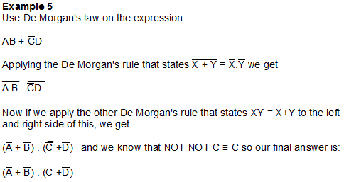

<div id="jsn-maincontent" class="span9 order1  row-fluid">
					<div id="jsn-maincontent_inner">
						<div id="jsn-centercol"><div id="jsn-centercol_inner">
									<div id="jsn-mainbody-content" class=" jsn-hasmainbody">
								<div id="jsn-mainbody-content-inner1"><div id="jsn-mainbody-content-inner2"><div id="jsn-mainbody-content-inner3"><div id="jsn-mainbody-content-inner4" class="row-fluid">
								
										
								
								<div id="jsn-mainbody-content-inner" class="span12 order1 ">
		
										<div id="jsn-mainbody">
										<div id="system-message-container">
	</div>

										<div class="item-page" itemscope itemtype="https://schema.org/Article">
	<meta itemprop="inLanguage" content="en-GB" >
	
		
						
		
	
	
		
								<div itemprop="articleBody">
		<p></p>
<h1 style="text-align: center;">Simplifying statements in Boolean algebra using De Morgan's laws</h1>
<p class="NormalContent"><strong><strong>Introduction<br></strong></strong>We have defined De Morgan's laws in a previous section. The key to understanding the different ways you can use De Morgan's laws and Boolean algebra is to do as many examples as you can. We will now look at some examples that use De Morgan's laws. As you get more experienced, you will see that De Morgan's rules don't just apply to single variables. They apply to where there are more than just two variables in the expression and by working through as many examples as you can find, you will begin to understand this and look out for it. Also, don't forget that the rules can be applied in reverse as well e.g.&nbsp;<span style="line-height: 16.3636360168457px; text-decoration: overline;">XY</span><strong style="line-height: 16.3636360168457px;">&nbsp;≡</strong><span style="line-height: 16.3636360168457px;">&nbsp;&nbsp;</span><span style="line-height: 16.3636360168457px; text-decoration: overline;">X</span><span style="line-height: 16.3636360168457px;">&nbsp;+&nbsp;</span><span style="line-height: 16.3636360168457px; text-decoration: overline;">Y</span>&nbsp;as well as <span style="line-height: 16.3636360168457px; text-decoration: overline;">X</span><span style="line-height: 16.3636360168457px;">&nbsp;+&nbsp;</span><span style="line-height: 16.3636360168457px; text-decoration: overline;">Y</span>&nbsp;<strong style="line-height: 16.3636360168457px;">≡&nbsp;</strong><span style="line-height: 16.3636360168457px; text-decoration: overline;">XY</span>&nbsp;so look out for that being used. Don't forget:</p>
<h3 class="NormalContent" style="text-align: center;"><strong>An easy way to remember De Morgan's rules is that each term is complemented, and&nbsp;<br>then the ORs become ANDs, and the ANDs become ORs.</strong></h3>
 
<p class="NormalContent"><strong>Example 1<br></strong>Use De Morgan's law on the expression NOT(A AND B AND C).</p>
<p class="NormalContent">We can represent this as&nbsp;¬(A&nbsp;Λ B&nbsp;Λ C) or our preferred notation</p>
<p class="NormalContent" style="margin-left: 30px;"><strong><span style="text-decoration: overline;">ABC</span></strong></p>
<p>Applying the De Morgan's rule that states <span style="text-decoration: overline;">XY</span>&nbsp;<strong>≡</strong>&nbsp; <span style="text-decoration: overline;">X</span>&nbsp;+ <span style="text-decoration: overline;">Y</span>&nbsp;we get&nbsp;</p>
<p style="margin-left: 30px;"><strong><span style="text-decoration: overline;">ABC&nbsp;</span> ≡ &nbsp;<span style="text-decoration: overline;">A</span>&nbsp;+ <span style="text-decoration: overline;">B</span>&nbsp;+&nbsp;<span style="text-decoration: overline;">C</span></strong>&nbsp; &nbsp; &nbsp; &nbsp; &nbsp; &nbsp; &nbsp; &nbsp; &nbsp; &nbsp; &nbsp;</p>
<p class="NormalContent" style="margin-top: 10px;"><strong><br>Example 2<br></strong>Use De Morgan's law on the expression NOT(A OR B OR C).</p>
<p class="NormalContent">We can represent this as&nbsp;¬(A&nbsp;V B&nbsp;V C) or our preferred notation</p>
<p class="NormalContent" style="margin-top: 10px; margin-left: 30px;"><strong><span style="text-decoration: overline;">A + B + C</span></strong></p>
<p style="margin-bottom: 10px;">Applying the De Morgan's rule that states&nbsp;<span style="text-decoration: overline;">X + Y</span>&nbsp;<strong>≡</strong>&nbsp;&nbsp;<span style="text-decoration: overline;">X</span>&nbsp;<span style="text-decoration: overline;">Y</span>&nbsp;we get&nbsp;</p>
<p class="NormalContent" style="margin-bottom: 10px; margin-left: 30px;"><strong><span style="text-decoration: overline;">A + B + C&nbsp;</span>&nbsp;≡ &nbsp;<span style="text-decoration: overline;">A</span>&nbsp;<span style="text-decoration: overline;">B</span>&nbsp;<span style="text-decoration: overline;">C</span>&nbsp;</strong></p>
<p>&nbsp;</p>
<p class="NormalContent" style="margin-top: 10px;"><strong>Example 3<br></strong>Use De Morgan's law on the expression NOT(E AND F AND G AND H).</p>
<p class="NormalContent">We can represent this as&nbsp;¬(E&nbsp;Λ F&nbsp;Λ G Λ H&nbsp;) or our preferred notation</p>
<p class="NormalContent" style="margin-left: 30px;"><strong><span style="text-decoration: overline;">EFGH</span></strong></p>
<p>Applying the De Morgan's rule that states&nbsp;<span style="text-decoration: overline;">XY</span>&nbsp;<strong>≡</strong>&nbsp;&nbsp;<span style="text-decoration: overline;">X</span>&nbsp;+&nbsp;<span style="text-decoration: overline;">Y</span>&nbsp;we get&nbsp;</p>
<p style="margin-left: 30px;"><strong><span style="text-decoration: overline;">EFGH&nbsp;</span>&nbsp;≡ &nbsp;<span style="text-decoration: overline;">E</span>&nbsp;+&nbsp;<span style="text-decoration: overline;">F</span>&nbsp;+&nbsp;<span style="text-decoration: overline;">G</span>&nbsp;<strong>+&nbsp;<span style="text-decoration: overline;">H</span></strong>&nbsp;</strong>&nbsp;&nbsp; &nbsp; &nbsp; &nbsp; &nbsp; &nbsp; &nbsp; &nbsp; &nbsp; &nbsp;&nbsp;</p>
<p class="NormalContent"><strong><br>Example 4<br></strong>Use De Morgan's law on the expression NOT(E OR F OR G OR H).</p>
<p class="NormalContent">We can represent this as&nbsp;¬(E&nbsp;V F&nbsp;V G V H) or our preferred notation</p>
<p class="NormalContent" style="margin-left: 30px;"><strong><span style="text-decoration: overline;">E + F + G + H</span></strong></p>
<p>Applying the De Morgan's rule that states&nbsp;<span style="text-decoration: overline;">X + Y</span>&nbsp;<strong>≡</strong>&nbsp;&nbsp;<span style="text-decoration: overline;">X</span>&nbsp;<span style="text-decoration: overline;">Y</span>&nbsp;we get&nbsp;</p>
<p class="NormalContent" style="margin-bottom: 10px; margin-left: 30px;"><strong><strong><span style="text-decoration: overline;">E + F + G + H</span></strong>&nbsp;≡ &nbsp;<span style="text-decoration: overline;">E</span>&nbsp;<span style="text-decoration: overline;">F</span><strong>&nbsp;<span style="text-decoration: overline;">G</span>&nbsp;<span style="text-decoration: overline;">H</span></strong></strong></p>
<p></p>
<p><br><br></p>
<p><br><br></p>
<p></p>
<p><br><br><br></p>
<p><br><br></p>
<p>&nbsp;</p>
<p><br><span style="line-height: 1.5;">&nbsp; &nbsp; &nbsp; &nbsp; &nbsp; &nbsp;&nbsp;</span>&nbsp;</p>
<p></p>	</div>

	
							</div>

									</div>
				
							</div>
							
				        							
							
							</div></div></div></div></div>			
							
							
		        				</div></div> 
				</div></div>